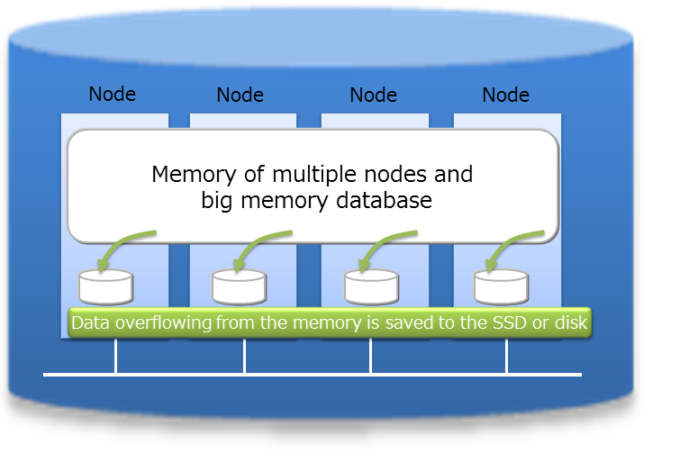
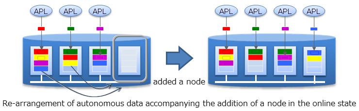

Table of Contents
3.1 GridDB Technical Overview¶
NoSQL databases are a relatively modern phenomenon that have permeated throughout the industry very quickly. The current data models being used most frequently in NoSQL databases are: Key-Value, Document, Graph, and Column-Oriented. With the advent of GridDB, a new structure is being introduced: Key-Container. Every method of organizing data has its own set of merits and features. In this chapter, we will address some of these merits.
Scaling¶
In addition to supplying the 3 Vs (volume, variety, velocity) required in big data solutions, GridDB also provides data reliability/availability. GridDB also utilizes its autonomous node monitoring and load balancing functions to save on precious resources for cluster applications. As the scale of a system expands, the volume of data being handled also increases, requiring a need for more resources. System expansion can be broadly divided into 2 approaches - scale-up (vertical scalability) and scale-out (horizontal scalability).
What is scale-up?
This approach upgrades the system by adding memory to the operating machines, using an SSD for the disks, adding processors, and so on. With the scale-up method, it is required to halt the machine during an upgrade. This reliance on a single machine opens up the application to a certain amount of risk – if the machine fails, the entire system goes down. The benefit of scaling up is having a modular system in place and simply upgrading one portion of the machine at a time (ie. upgrading the disk to flash memory).
What is scale-out?
This approach increases the number of nodes (machines) constituting a system to improve the processing capability. Generally, there is no need to completely stop service when a failure occurs or during maintenance as multiple nodes are linked and operating together. However, the application management time and effort increases as the number of nodes increases. This architecture is suitable for performing highly parallel processing.
With GridDB, in addition to the scale-up approach to increase the number of operating nodes and reinforce the system, new nodes can be added to expand the system with a scale-out approach to incorporate nodes into an operating cluster. As an in-memory processing database, GridDB can handle a large volume of data with its scale-out model. With GridDB, data is distributed throughout the nodes inside a cluster that is composed of multiple nodes. Therefore, a large-scale memory database can be provided as the memories of multiple nodes can be used as a single, large memory space. In addition, since data management of a hybrid composition that combines the use of disk with memory is also possible, data exceeding the memory size can be retained and accessed even when operating with a standalone node. A large capacity that is not limited by the memory size can also be realized.

System expansion can be carried out online with a scale-out approach. As a result, a system in operation can be supported without having to stop it as it will support the increasing volume of data as the system grows. In the scale-out approach, data is arranged in an appropriate manner according to the load of the system in the nodes built into the system. As GridDB will optimize the load balance, the application administrator does not need to worry about the data arrangement. Operation is also easy because a structure to automate such operations has been built into the system.
